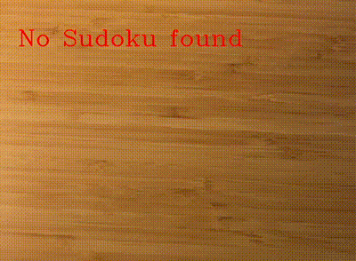
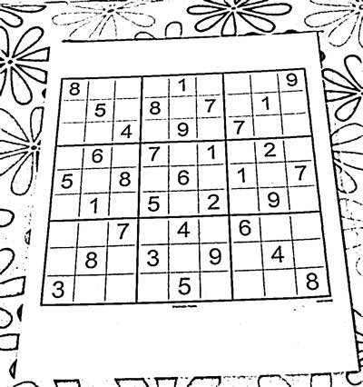
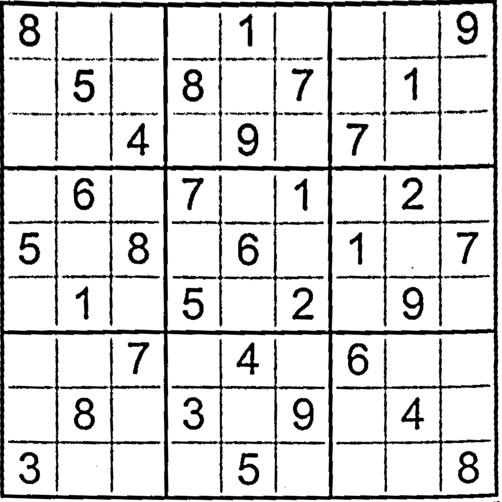
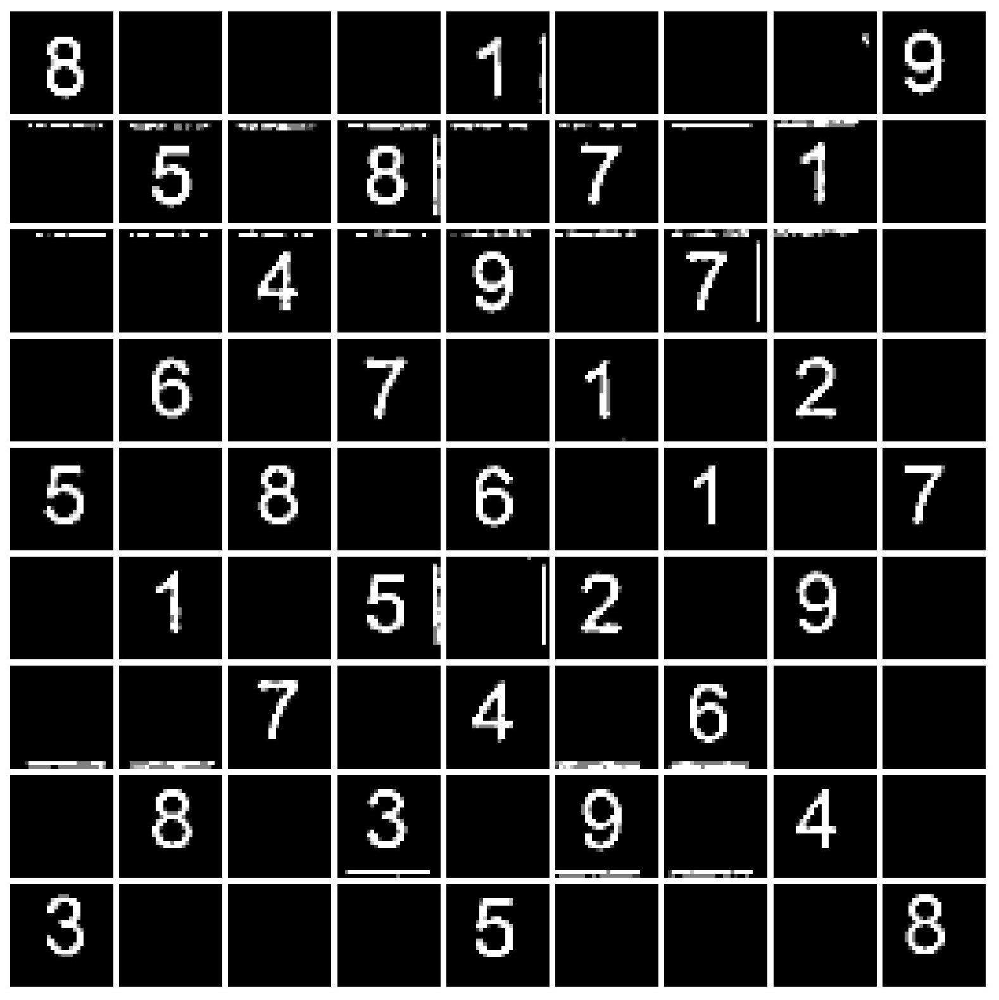
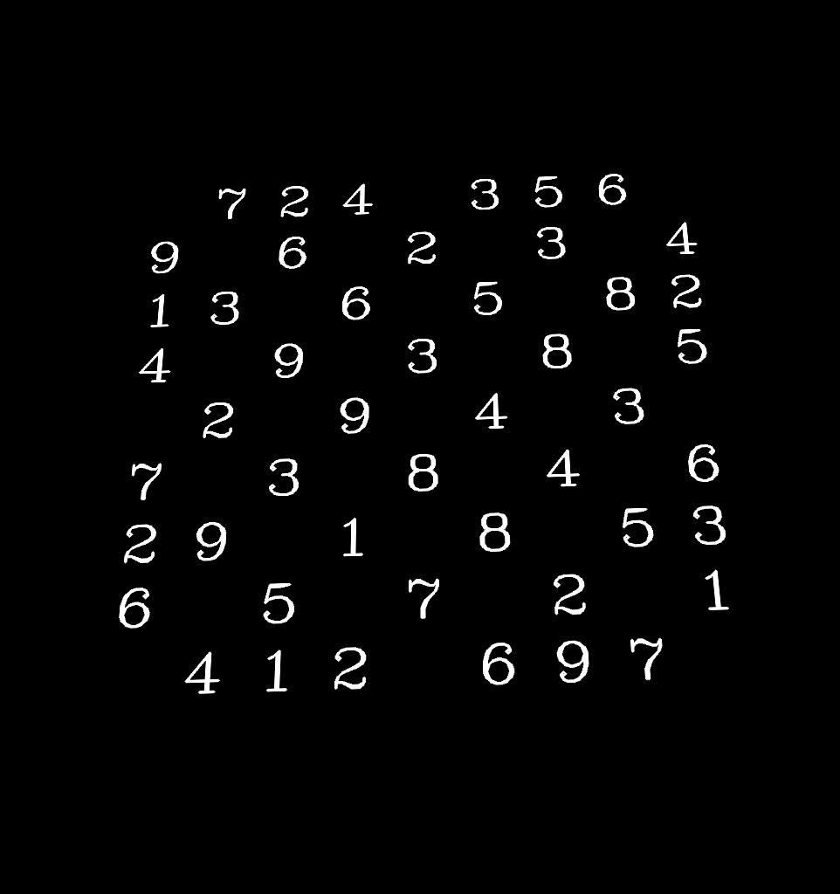
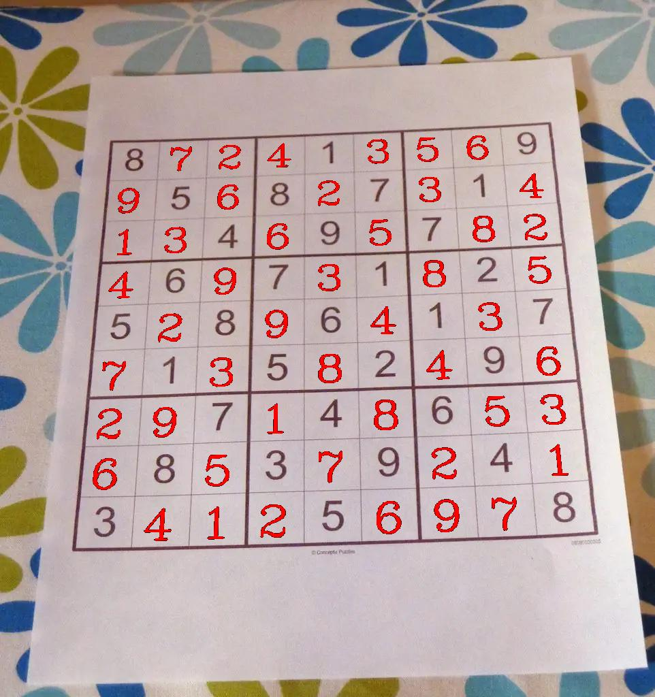

Sudoku Solver
16. November 2024
In this blog post, I present my implementation of a real-time Sudoku solver in Python using OpenCV and PyTorch. I assume you are familiar with Sudoku puzzles, have some knowledge of Python, and understand basic machine learning concepts, especially in the digit detection section. I will explain the main code snippets step-by-step in the following sections. The complete project is available on GitHub. Feel free to check it out and contact me if you have any questions or comments.

Overview
Before diving into the details, I think it is a good idea to start with an overview over the whole process. Let's take a look at the function that basically does all the work (with some edge case handeling removed). The following code snippet processes one frame. Processing a video is then simply calling this function on every frame.
def process_sudoku(img, model):
prep_img = preprocessing(img)
square, corners = find_sudoku_square(prep_img)
cells = extract_cells(square)
preds = []
for c in cells:
if is_empty_cell(c):
X = torch.tensor(c).unsqueeze(0).unsqueeze(0)
preds.append(model(X).argmax(1).item() + 1)
else:
preds.append(None)
sudoku = Sudoku(preds)
solution = sudoku.solve()
if solution:
I = draw_digits(img, sudoku, solution, corners)
return blend_images(I, img, I)
return cv.putText(img, "Cannot solve Sudoku")The function takes an image and a neural network as input. The first step is to preprocess the image. The preprocessed image is then used to extract the Sudoku grid. The function find_sudoku_square returns the rectangular image patch containing the Sudoku grid and the coordinates of the grid corners. The corners are later needed for projecting the solution onto the original image. As next step we apply extract_cells to split up the Sudoku grid into single cells. In the loop we classify the digits in the cells (or if they are empty) using the neural network. The collected predictions are put inside a Sudoku object to compute a solution for the puzzle. draw_digits draws the solution onto the image patch and applies a perspective projection to the patch using the corners. As last step the projected Sudoku solution is blended with the original image. In case of a video we do this for process for every frame.
Image Preprocessing
Let's take a look at the first step of the whole Sudoku solver: preprocessing. The goal of preprocessing is to apply operations to the image that simplify the other processing steps.
def preprocessing(img):
img = img.copy()
img = cv.cvtColor(img, cv.COLOR_BGR2GRAY)
max_dim = max(img.shape[0], img.shape[1])
kernel_size = int(max_dim*0.01) if int(max_dim*0.01) % 2 == 1 else int(max_dim*0.01)+1
img = cv.GaussianBlur(img, (kernel_size,kernel_size), 0)
img = cv.adaptiveThreshold(img, 255, cv.ADAPTIVE_THRESH_GAUSSIAN_C, cv.THRESH_BINARY, 11, 2)
return imgThe preprocessing function does four things. It creates a copy of the input image, converts it to a grayscale image, applies a Gaussian blur and performs Adaptive thresholding. Let's go through the single steps. The function recieves a frame as argument. We can assume that the frame was read using OpenCV. To avoid any problems with shallow copying I create copy of the whole frame. At the beginning I was worried that calling the copy method on every frame is computationally to expensive and will impact the real-time performance of the solver. But it turn's out that for my test setup it doesen't (which was an iPhone 12 Mini for video capturing and a MacBook Air with M1 chip for processing). So I decided to stick with copying every frame to make sure the Sudoku solver operates on its own version of the image.
After creating a copy of the frame, the frame is converted into a grayscale image. By converting the image to grayscales we reduce the amount of data we need to process. Colors in the image are not really important for detecting the grid, digits or computing the solution and can therefore be dropped.
As next step we apply a Gaussian blur to the grayscale image. The idea behind this step is to reduce image noise. Because the image at this point can have different sizes I use a kernel size of 1% of the largest dimension of the input image. The if statement ensures that the kernel size is always odd, since kernel sizes for OpenCV's cv.GaussianBlur function must be odd. The kernel is a matrix of weights that follow a two dimensional Gaussian distribution. This means that kernel weights that are closer to the kernel center are higher and weights farther from the center are smaller. The blurred image is then the result of computing the convolution of the Gaussian kernel with the image.
The last step in the image preprocessing is Adaptive Thresholding. Thresholding in general describes the process of converting a grayscale image into a binary image. In other words when we apply thresholding we have to decide for each pixel if we set the pixel to 0 (black) or 255 (white). In conventional thresholding we have a fixed global threshold . If an image pixel we set and otherwise . This approach creates problems if we have situations with difficult illumination. Because we use the same threshold for dark and bright areas, our thresholding process might not produce the results we expect. Adaptive Thresholding tries to solve this issue by selecting a threshold based on the pixels neighborhood. If you are intrested in how OpenCV's image thresholding works in detail you can take a look at OpenCV's tutorial.
After all this theory, let's take a look at the intermediate output of the preprocessing step for a test image

Sudoku Detection
The next task is to use the preprocessed image and to extract the Sudoku grid from it. I do this by extracting the biggest rectangle in the image that has 9 or 81 "components" in it. Why not using Machine Learning for this task? Mainly for two reasons. Firstly, I was not able to find a dataset for training a ML model. But the more important reason is: Why using a complex ML model, if the simple approach works as well? A well trained ML model would probably be able to detect the Sudoku grid in cases where my approach fails. There is also no garantee that the biggest rectangle in the image with 9 or 81 "components" inside it is actually a Sudoku grid. But I think that the non-ML approach is still good enough for the intended use-cases. So let's take a look on how the Sudoku grid detection can be done with OpenCV
def find_sudoku_square(img):
contours, hierarchy = cv.findContours(img, cv.RETR_TREE, cv.CHAIN_APPROX_SIMPLE)
for i, c in enumerate(contours):
perimeter = cv.arcLength(c, closed=True)
approx = cv.approxPolyDP(c, epsilon=0.1*perimeter, closed=True)
if len(approx) == 4:
num_children = _count_children(i, hierarchy)
if num_children == 9 or num_children == 81:
return _extract_sudoku_square(img, approx)
return None, []The function find_sudoku_square takes as input the preprocessed image from the previous step. The first step is finding the contours in in the image. Up to this point we only have a binary image (an image where every pixel is either 0 or 255). But we have no information about which black pixels are connected and form a shape. We can compute this kind of information from a binary image with OpenCV's cv.findContours function. The second argument cv.RETR_TREE tells OpenCV to not only extract the contours, but also their hierarchical relation in a tree-like structure. This tutorial gives a great overview on how this works and how the hierarchy is represented. The last argument is for defining how the contours should be approximated (approximating contours saves memory). For example lines can be stored as start and end points (see the documentation for more details). The mode cv.CHAIN_APPROX_SIMPLE performs exactly this kind of approximation by compressing horizontal, vertical, and diagonal segments.
Next we loop over each countour and compute its perimeter with cv.arcLength. The contour is then further approximated with OpenCV's cv.approxPolyDP function. Why should we compute a second approximation if we already approximated the contours? The main reason is that we have no control over the roughness of the first approximation. When approximating with cv.approxPolyDP we can set the epsilon parameter which controls the approximation error. In my implementation the approximation error is set to 10% of the perimeter. After the second approximation we can check if the contour is a rectangle by checking if it is represented by four points. If the contour is a rectangle, we can use the extracted hierarchy to count how many contours are inside the rectangle. For the counting of the child-contours I have implemented a little helper function _count_children. If the rectangle has 9 or 81 contours (representing either the 9 bigger blocks or the 81 individual cells) in it, I assume that the current rectangle is the Sudoku grid. Finally the detected Sudoku grid is extracted using _extract_sudoku_square. If no contour satisfies the conditions the function returns None to indicate that no Sudoku grid is present in the image. Let's take a closer look at the extraction.
def _extract_sudoku_square(img, corners):
dst_size = 1000
src_pts = _sort_corners(corners)
dst_pts = np.array([[0,0], [1,0], [0,1], [1,1]]).astype(np.float32) * dst_size
M = cv.getPerspectiveTransform(src_pts, dst_pts)
return cv.warpPerspective(img, M, (dst_size+10, dst_size+10)), src_pts
Since we cannot assume that our corners are sorted in some way, I implemented a little helper function _sort_corners for sorting the corners in clockwise order (starting from the upper left corner). We can then map the (possibly) distorted rectangle from the image to a rectified plane. In the implementation we map the source points (the sorted corners from the image) to a 1000 x 1000 pixel plane. Mathematically speaking we need a matrix that maps the source coordinates into destination coordinates of the rectified plane. We can compute the matrix by passing the source and destination coordinates to OpenCV's cv.getPerspectiveTransform. We can then pass the matrix to cv.warpPerspective and apply the perspective transformation. The third argument specifies the size of the output image. I set the output image size to 1010 x 1010 pixel. The 10 additional pixels are added to include the border of the Sudoku grid. If you are intrested in reading more about perspective transformations in OpenCV I can recommend the the documentation or this tutorial. Finally we return the extracted image patch together with the sorted corners (remember, we need them later to project the solution back on the image). Lets look at the final result of this processing step

Cell Extraction
The main goal in the cell extraction step is to split up the detected Sudoku grid into 9 x 9 single cells. The following code performs this operation
def extract_cells(img):
height, width = img.shape
cell_height, cell_width = height // 9, width // 9
cells = []
for i in range(0, height-cell_height, cell_height):
for j in range(0, width-cell_width, cell_width):
cell = img[i:i+cell_height, j:j+cell_width]
cell = _remove_cell_borders(cell)
cells.append(cv.resize(cell, (28,28)))
return np.array(cells).astype(np.float32) / 255.You can see that the two for loops are used to divide the Sudoku grid into 9 x 9 equally spaced cells. The function _remove_cell_borders is then applied to every cell. The cell border artifacts are present because the cells are extracted by naively splitting the Sudoku grid into 9 x 9 cells. Therefore it might occur that parts of the black border, that divided the cells is present in the image patches of the individual cells. This border artifacts are removed by only keeping the biggest contour of the cell (which is assumed to be the digit). Removing the border helps alot in boosting the performance of the neural network in the digit recognition step. Finally the cells are resized to 28 x 28 pixels and normalized into values between 0 and 1. The output of the cell extraction step is

Digit Recognition
At this point, we have 81 image patches that, hopefully, contain the individual digits from the Sudoku grid. However, we cannot solve the Sudoku puzzle directly from these patches. First, we need to perform digit recognition on the cells to extract a numerical representation of the Sudoku grid. I decided to use a neural network for this task. Let's take a look at the code in the process_sudoku function.
preds = []
for c in cells:
if is_empty_cell(c):
X = torch.tensor(c).unsqueeze(0).unsqueeze(0)
preds.append(model(X).argmax(1).item() + 1)
else:
preds.append(None)After extracting 81 cells, we can iterate over them and collect the predictions. For each cell, we check if it is empty using the utility function is_empty_cell. This function checks if more than 3% of the cell’s center consists of black pixels. The cell center is computed by removing a 5-pixel border on each side of the cell. If more than 97% of the cell center is white, the cell is classified as empty, and None is appended to the predictions. In the case of a non-empty cell, we transform the image patch into a PyTorch tensor with the correct dimensions (requiring two uses of unsqueeze). The tensor is then passed to the model, which outputs values corresponding to the digits from 1 to 9. We select the digit with the highest model response using argmax. Since argmax returns the index of the highest value, we add 1 to get the actual digit. The predicted integer is then appended to the list of predictions.
The model is a relatively simple Convolutional Neural Network (CNN). It consists of two convolutional layers, each followed by the ReLU activation function and a MaxPooling layer. The convolutional layers use a kernel size of 5, while the MaxPooling layers have a kernel size of 2. After the second convolutional layer, a final linear layer produces the output vector. I trained the model using stochastic gradient descent with a learning rate of for 10 epochs on the Printed Digits dataset, achieving a final accuracy of 96.1%. Initially, I tried training the model on the MNIST dataset of handwritten digits. However, after experimenting, I found that the model performed poorly on Sudoku images containing printed digits. Training the model on printed digits significantly improved its performance on real-world Sudoku images. At the end of this process, preds contains 81 elements, each either None or an integer between 1 and 9. The first two rows of the example image from the previous sections would be represented as follows
[
8, None, None, None, 1, None, None, None, 9,
None, 5, None, 8, None, 7, None, 1, None,
...
]Sudoku Solving
With a list representation of the Sudoku grid ready, we can apply an algorithm to solve the puzzle. I use a backtracking algorithm that solves the Sudoku recursively using a depth-first search approach. The algorithm and several helper functions are implemented in the Sudoku class. The following code shows the implementation of the backtracking algorithm within the Sudoku class (where self refers to an instance of the class).
def _solve_puzzle(self):
if self.is_solved():
return self
else:
empty_squares = self._compute_empty_squares()
if len(empty_squares) == 0:
return None
sorted_empty_squares = sorted(empty_squares, key=lambda x: len(x[1]))
(i,j), candidates = sorted_empty_squares[0]
for c in candidates:
self[i,j] = c
solution = self._solve_puzzle()
if solution is not None:
return solution
return NoneFirst, we check if the Sudoku is solved using the helper function is_solved, which verifies whether every row, column, and block is correctly filled. If the Sudoku is solved, we return the completed grid. If it is not solved, we compute a list of empty squares. Each entry in the list is a tuple containing the coordinates of an empty square and a list of possible candidates that can be inserted there. If there are no empty squares but the Sudoku is still unsolved, we return None, indicating that the puzzle has no solution. If there are empty squares, we sort them by the number of possible candidates. This optimization allows us to prioritize squares with fewer candidates, reducing the search space (e.g., if a square has only one possible candidate, we are constrained to insert that value). Next, we pick the empty square with the fewest candidates and attempt to solve the Sudoku recursively by trying each candidate. If a solution is found, we return it. If none of the candidates lead to a valid solution, we conclude that the puzzle has no solution and return None.
At the end of this process, the function either returns a Sudoku object representing the solution or None, indicating that the puzzle is unsolvable.
Solution Projection
The final processing step, after computing the solution, is projecting the solution back onto the original image. This step is performed only if a solution exists. The projection is handled by two functions: draw_digits and blend_images. Let's first take a look at the implementation of draw_digits.
def draw_digits(img, sudoku, solution, corners, transform_size=1000):
if solution is None:
return img
dst_pts = np.array([[0,0], [1,0], [0,1], [1,1]]).astype(np.float32) * 1000
M = cv.getPerspectiveTransform(corners, dst_pts)
wraped = np.zeros((transform_size,transform_size, 3)).astype(float)
cell_height, cell_width = transform_size // 9, transform_size // 9
for i, px in enumerate(range(0, transform_size-cell_height, cell_height)):
for j, py in enumerate(range(0, transform_size-cell_width, cell_width)):
if sudoku[i,j] is None:
patch = wraped[px:px+cell_height, py:py+cell_width]
digit_lower_left_coordinates = (int(cell_width*0.2),int(cell_height*0.85))
patch = cv.putText(patch, str(solution[i,j]), digit_lower_left_coordinates, ...)
return cv.warpPerspective(wraped, np.linalg.inv(M), (img.shape[1], img.shape[0]))This function takes four arguments: the original image (img), the unsolved Sudoku grid (sudoku), the solved Sudoku (solution), and the corners of the extracted Sudoku grid (corners). The first step is to check whether a solution exists. If solution is None, there is nothing to project, and we return the original image. After this initial check, we compute a projection matrix that maps the corners of the extracted Sudoku grid onto a 1000x1000-pixel square. The idea is to draw the solution on this square (represented by the variable wrapped in the code) and project it back onto the original image using .
In the nested loops, we write the digits of the solution as text onto the wrapped square, treating it as a 9x9 grid. The digit_lower_left_coordinates are computed to create a small margin, preventing the digits from being placed at the edges of the cells. This adjustment makes the final projection look more natural. We also check if a given cell is empty in the original Sudoku. This check is essential to avoid overwriting existing digits from the original image. After drawing the digits, we apply the inverse perspective transform using cv.warpPerspective and np.linalg.inv. Let's take a look at the intermediate output of the draw_digits function. Notice that the solution retains the same tilt as the original image.

The next step is blending the projected solution with the original image to produce a single output frame. This is done by using the blend_images function.
def blend_images(background, mask, color=(0.,0.,1.)):
foreground = mask * color
background = cv.multiply((1.0 - mask).astype(np.uint8), background)
return cv.add((foreground*255).astype(np.uint8), background)The function receives the original image and the binary mask (containing the projected solution) produced by draw_digits as input. The foreground is computed by combining the binary mask with color information (by default, the solution's color is red). The background is computed by multiplying the original image with the inverted mask, effectively masking out the solution digits from the original image. In the final step, we add the foreground (containing only the colored solution) to the background (containing everything except the solution). The result is the solution projected onto the original image.

Conclusion
The only thing left to make the Sudoku solver work is to read an image (or video) using OpenCV and call process_sudoku (the function described in the overview section) on the loaded image.
Obviously, there is room for improvement. For example, the Sudoku grid detection may not work under certain conditions or for some Sudoku grids. Since the solution is projected frame-by-frame, it is possible for the projection to be missing in some frames if the Sudoku grid extraction fails. Lastly, the Sudoku solver is not well-defined if more than one Sudoku grid is present in the scene.
I hope this post has given you a clear understanding of how the Sudoku solver works, and I encourage you to test the system or implement your own solver. Feel free to try out the code, and don't hesitate to share any ideas or improvements in the comments.